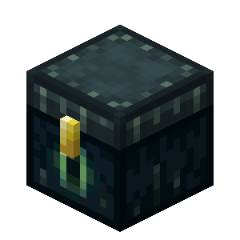
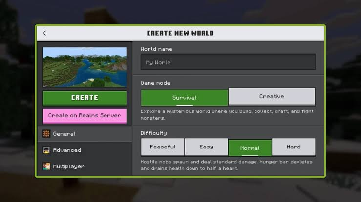
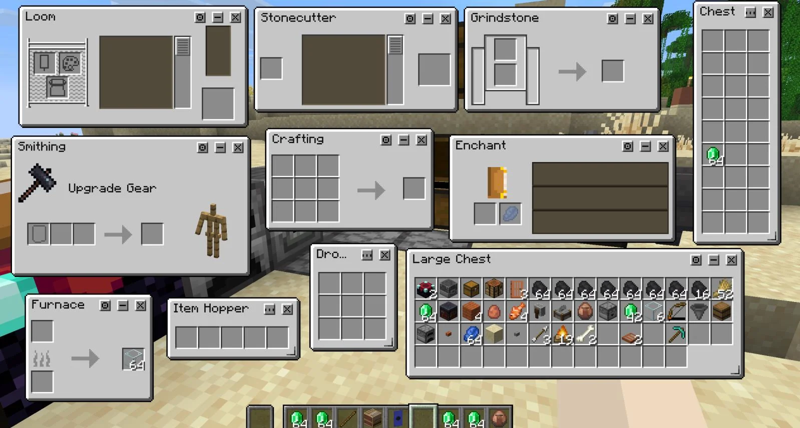
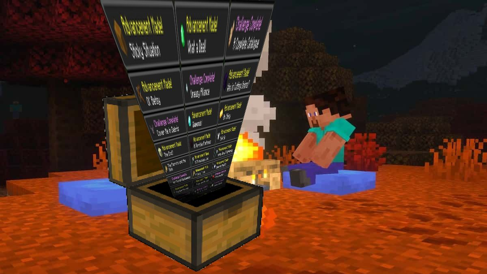
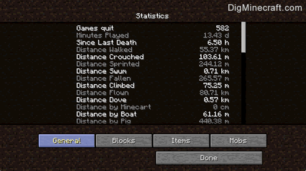

Git es un sistema de control de versiones distribuido que permite a los desarrolladores
rastrear y gestionar los cambios en el código fuente de un proyecto a lo largo del tiempo.

Podemos imaginarlo como un enderchest, pues almacena todo lo que nosotros deseemos de forma segura y local.
Registrarse en Git
Similar a como uno define su nametag en Minecraft, al registrarse en Git, se asigna un nombre de usuari
y un correo electrónico que se utilizarán para identificar al desarrollador en el historial de cambios.
git config --global user.name "TuNombre" :
Configura el nombre de usuario global para Git.
git config --global user.email "TuEmail" :
Configura el correo electrónico global para Git.
Comandos Relacionados con Git
A continuación, se presentan algunos de los comandos más utilizados en Git, junto con una breve
descripción y comparación para poder comprender cuál es su función:
git init : Inicializa un nuevo repositorio Git en el directorio actual.
git clone : Crea una copia local de un repositorio existente.
git add : Agrega archivos al área de preparación (staging area).
git commit : Guarda los cambios en el historial del repositorio.
git status : Muestra el estado de los archivos en el repositorio.
git log : Muestra el historial de cambios en el repositorio.
git init
Si deseamos crear un repositorio Git en nuestro directorio actual, utilizamos el comando git init .
Podemos compararlo con la creación de mundos en Minecraft, sin embargo, hay una clara diferencia;
en Minecraft, al crear un mundo, este se genera con archivos, mientras que al crear un repositorio Git,
este se genera vacío, sin archivos ni carpetas, será nuestro labor el agregar archivos y carpetas al mismo.

git clone
Si deseamos trabajar con un repositorio que ya existe, utilizamos el comando git clone .
Podemos compararlo con la descarga de mapas en Minecraft, al descargar un mapa, este se genera con los
archivos y carpetas de su/s creadores. Al clonar un repositorio Git, este se genera con archivos y carpetas
que ya existían en el repositorio original, identico a Minecraft.
git add
Si deseamos agregar archivos al área de preparación (staging area), utilizamos el comando git add .
Cualquier acción realizada en el juego podría ser un ejemplo de este comando, si destruimos un bloque, si
construimos una casa, si matamos un zombi, si logramos una hazaña impresionante; son datos que decidimos
guardar en nuestra partida. Como Minecraft tiene guardado automatico, no podemos elegir que deseamos guardar,
sin embargo, en Git, podemos elegir que cambios deseamos guardar y cuales no, con git add
podemos escoger a estos mismos.

git commit
Si deseamos guardar los cambios en el historial del repositorio, utilizamos el comando git commit .
Como se explico en la sección anterior, cualquier acción realizada en el juego podría ser un dato a guardar,
pero estos datos dispersos, no tienen sentido si no los guardamos en un archivo de guardado. Al salir de la partida,
Minecraft guarda automáticamente los cambios realizados en el mundo, este sería el commit de nuestra partida,
mediante archivos incluso podemos duplicarla y recargarla en cualquier momento. En git, el commit es el
encargado de guardar los cambios que decidimos con git add .

git status
Si deseamos ver el estado de los archivos en el repositorio, utilizamos el comando git status .
En Minecraft, si deseamos ver el estado de nuestro mundo, podemos abrir el menú de pausa y ver la información
del mundo, como la cantidad de jugadores conectados, la dificultad del juego, la versión del juego, entre otros.
En Git, el comando git status nos permite ver el estado de los archivos en el repositorio,
como los archivos modificados, los archivos agregados al área de preparación y los archivos sin seguimiento.

git log
Si deseamos ver el historial de cambios en el repositorio, utilizamos el comando git log .
El comando git log nos permite ver el historial de cambios en el repositorio, como los commits realizados,
los autores de los commits y los mensajes de los commits. En Minecraft esto sería como ver las diferencias
entre los archivos de guardado, que bloques se agregaron, quien los puso, etc.